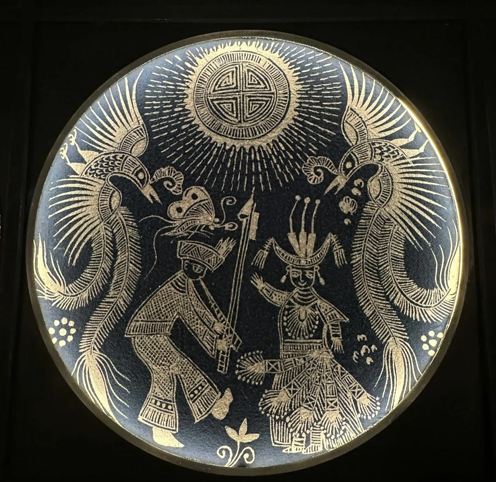
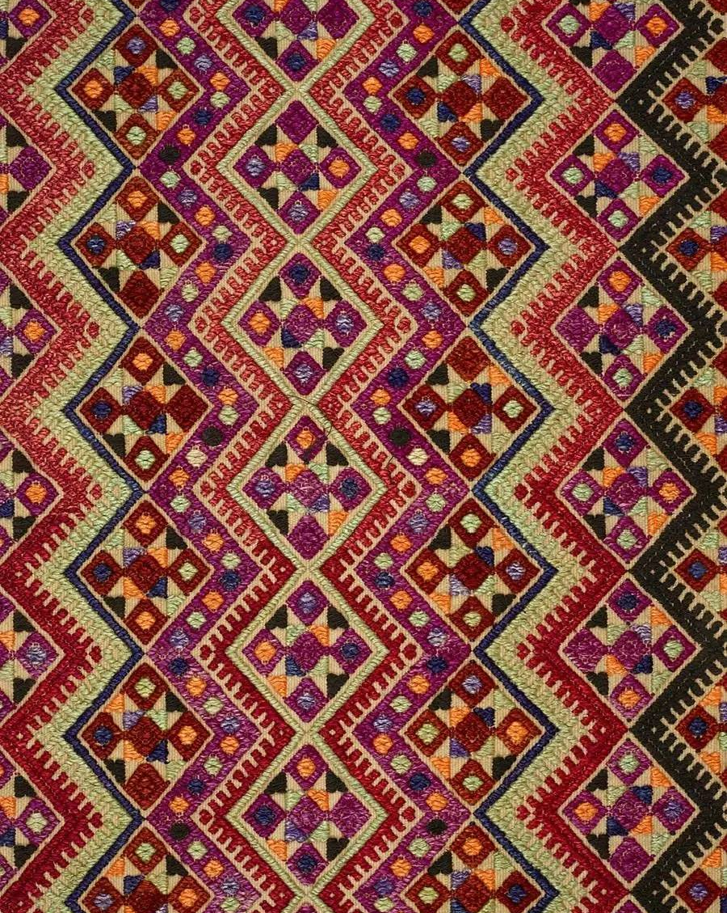
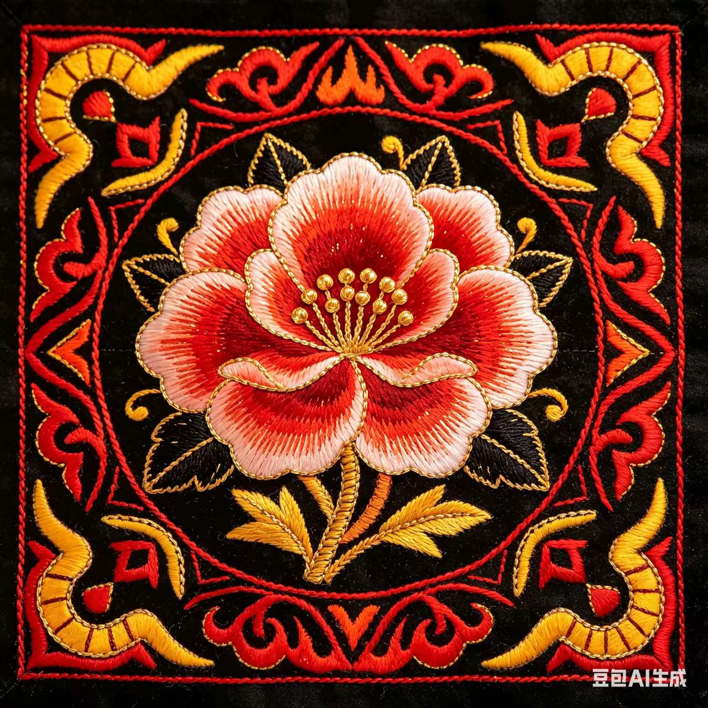
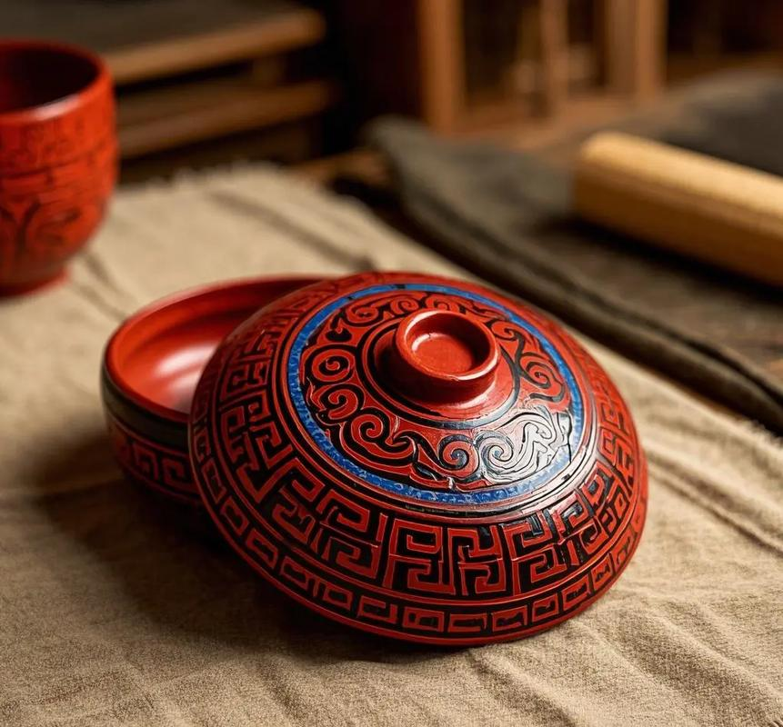
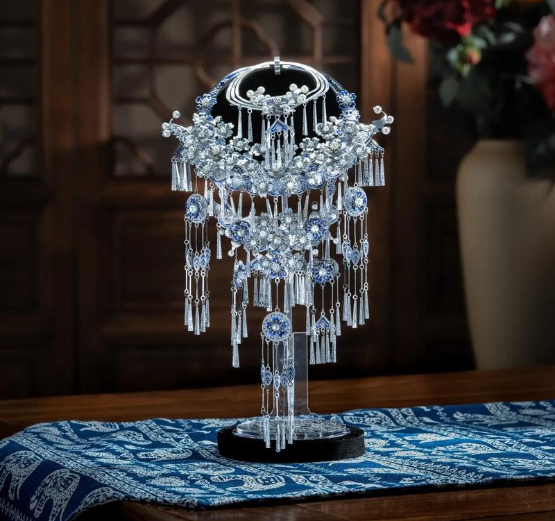

探寻苗绣 · 壮锦 · 彝绣的文化共鸣
穿在身上的史诗，指尖流淌的族群记忆
黔东南深山之中，苗族女子以针为笔，以线为墨。蝴蝶纹样不仅是装饰，更是《苗族古歌》中人类始祖“蝴蝶妈妈”的神圣化身。


经纬交织间，是壮族人民对光明的向往。色彩热烈奔放，凤凰与太阳纹样象征着生命力的永恒绽放。
凉山腹地，黑底红纹。马缨花被视为神圣之花，粗犷的针法中藏着彝族人对自然万灵的敬畏与祈福。

天人合一的建筑智慧，风雨桥下的岁月静好
房屋中柱雕刻日月星辰，既是支撑屋宇的脊梁，也是沟通天地的神圣通道。
集桥、廊、亭于一体，不用一钉一铆，却是村寨社交与休憩的核心公共空间。
欢歌中的文化认同，烟火里的民族温情
壮乡青年以对歌传情，苗家姑娘吃姊妹饭。春日的庆典，关于爱与生命的赞歌。
彝族火把节，东方狂欢夜。火光驱除邪恶，达体舞跳出丰收的喜悦。
丰收后的祭祀，百米长桌宴。家族与村寨在酒杯碰撞中紧紧相连。
指尖的温度，凝固在银饰与漆器之间

苗族银饰锻制技艺精湛，以大为美、以重为美。银角、银项圈不仅是装饰，更是行走的家族财富与辟邪的图腾。

彝族漆器以黑、红、黄三色为主，纹样古朴。每一件餐具、酒具都经过数十道工序，承载着对火的崇拜与生活的热爱。